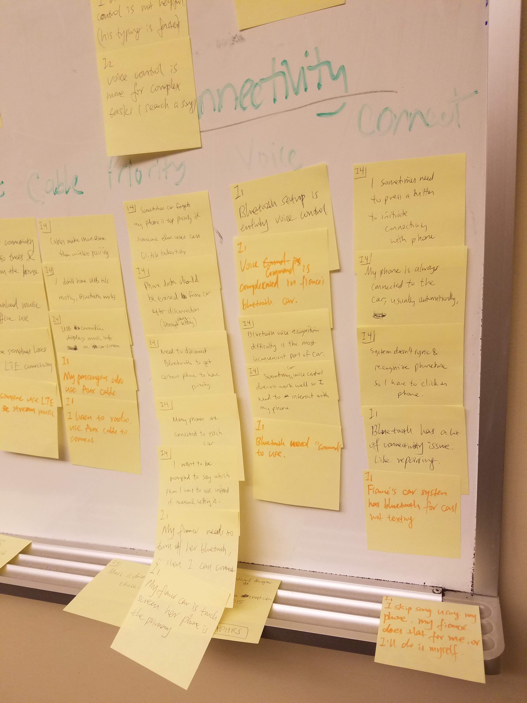
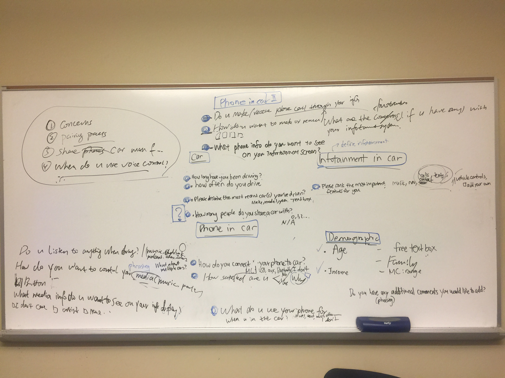
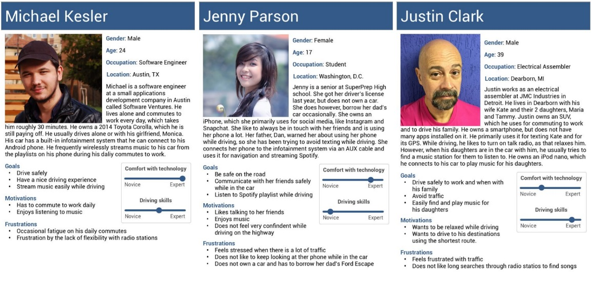
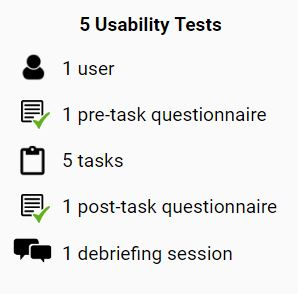
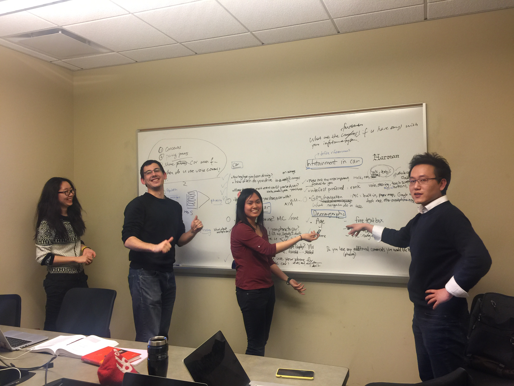

Harman Consulting
UX Research. Consulting.
Overview
As consultants for Harman International Industries, our team conducted usability research on one of their in-vehicle infortainment systems. Our goals were to 1) understand the user population - those who drive or ride in cars - and how they connect to their cars and infotainment systems, as well as to 2) evaluate the usability of the system. This project is under a non-disclosure agreement, so certain product details and research findings have been partially omitted.
{kind=link}
Role
UX Researcher
Time Frame
Jan 2017 - Apr 2017
Context
Applied Team Project
Methods
Interviews, Surveys, Personas, Heuristic Evaluations, Usability Testing
Skills
Interviewing, analyzing data, developing protocols, piloting surveys, writing reports, public speaking and presentations
Competitive Analysis

In order to better understand the features of current infotainment systems, my team conducted a competitive analysis. We compared Harman's system with similar products by Panasonic and Bosch, as well as indirect competitors such as Android Auto, Apple CarPlay, Bose Automotive, and BeatsAudio.
Interviews
{kind=link}
To understand the user population's attitudes, motivations, and behaviors, we conducted four interviews with members of the target user population: drivers and passengers that interact with car infotainment systems.
My team held interpretation sessions where we extracted key findings and patterns from our interviews onto sticky notes. We created an affinity wall, putting notes with common themes together so we could see the broader picture and relationships and ultimately generate recommendations.
Surveys
With the key findings from our interviews in mind, we designed survey questions to assess how prevalent driver behaviors and attitudes were and to learn about the user demographics. From our 154 survey responses, we learned of four key findings related to preferred infotainment interaction interfaces, most commonly used infotainment features, and attitudes about phone-car connections.
Personas and Scenarios
{kind=link}
Our surveys and interviews helped us understand the user population and the contexts in which users interact with infotainment systems. We summarized this information into personas and scenarios, which are design artifacts we constructed to guide our thinking during the evaluation process. Next, we turned to heuristic evaluations and usability testing to assess the usability of Harman's product.
Heuristic Evaluation

Using Nielsen's (1994) ten Heuristics, each member of my team evaluated Harman's system and rated the level of severity of the usability issue. We then aggregated our findings and prioritized them before describing them in our report.
Usability Testing
The last research method we conducted was usability testing with five users. We created five tasks for users to complete using Harman's system, and we asked the participants to think aloud about their thought process and expectations while they did it. We observed and recorded comments, errors, and notable incidents. With our notes and responses from questionnaires we gave them, we concluded four key findings related to the phone-car connection process, home screen interface, and radio interface.
The Team
Special thanks to my wonderful teammates Kaiwen Sun, Raden Tonev, and Seungjoo David Baek for their contributions.